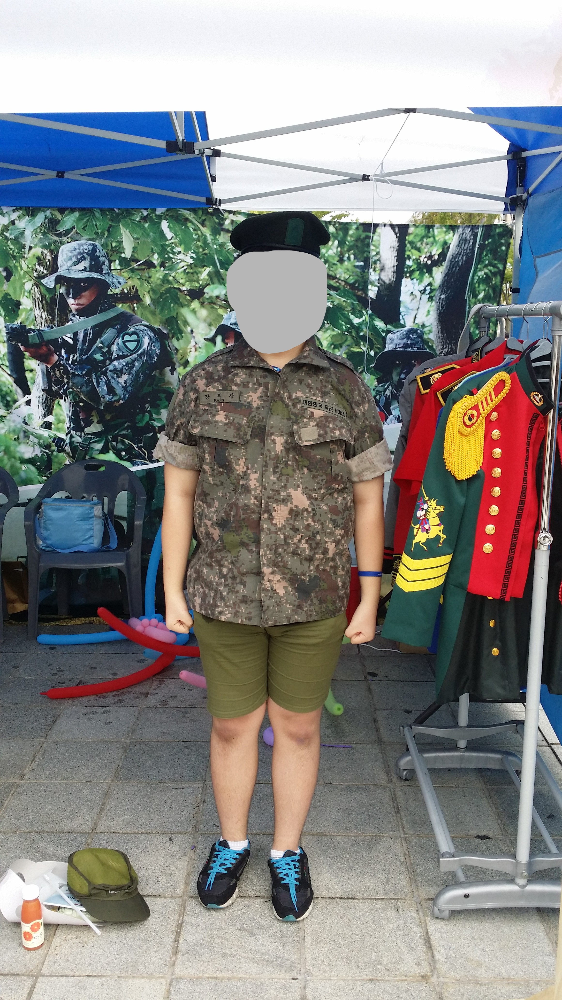
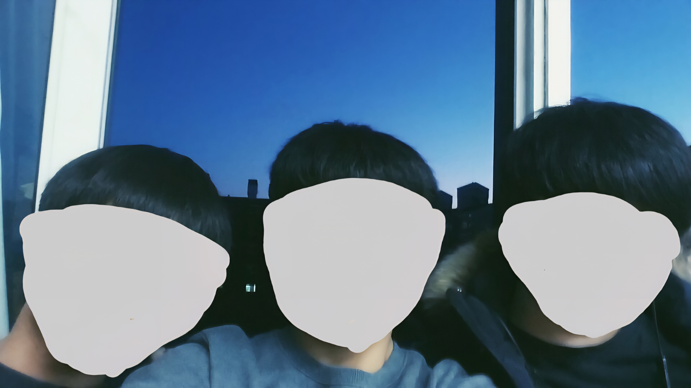

청소년기

광복 71주년 행사에서 군 장병 분들이 군복 체험 부스를 운영하셨다.
위장
잘하면 건빵 주는 이벤트도 있었는데, 내가 너무 잘해서 당황하셨던 장병 분의
표정이 기억에 남는다.
주요 연표
-
2015년: XX초와 같은 동에 있던
XX중학교 입학
-
2016년: 엄마께서 운영하시던 학원에 다님.
중학교

9년 전 반 단합 중에 찍은 셀카. 우측이 나다.
중1 때 처음으로 OMR 카드를 접했는데, 컴퓨터가
펜 잉크를 인식 하는 게 마냥 신기했다.
2학년이 되자, 재밌는 친구들을 만난 덕에
활발히 지냈다. 초등학생 때 친해진 절친과는
방정식 관련(수학 공부 싫다는...)
UCC를 만들어서 수학 시간에 선보였고, 반 인싸랑도 절친마냥 농담을 주고
받았다. 한 번은 이 친구가 날 XXX이라고
불렀는데, 그래서 XXXX라는 닉네임을
지었다.
3학년부턴 본격적인 입시에 들어갔고,
고교 때를 위해 시험을 어렵게 냈다는 3학년부장
선생님 말이 아직도 기억난다.
엄마 학원
중2 때, 엄마께서 미용실(블루클럽 "부개남점" <-- 잘 깎음.)와 함께 운영하셨던 학원에 다녔었다.
학원이 파주 운정에 있던지라, 엄마께서 매달
교통비(사실상 용돈)를 주셨다.